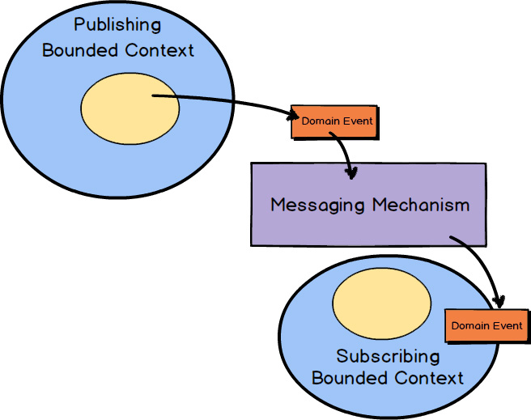
You’ve already seen a bit in previous chapters about how Domain Events are used. A Domain Event is a record of some business-significant occurrence in a Bounded Context. By now you know that Domain Events are a very important tool for strategic design. Still, often during tactical design Domain Events are conceptualized and become a part of your Core Domain.
To see the full power that results from using Domain Events , consider the concept of causal consistency. A business domain provides causal consistency if its operations that are causally related—one operation causes another—are seen by every dependent node of a distributed system in the same order [Causal] . This means that causally related operations must occur in a specific order, and thus one thing cannot happen unless another thing happens before it. Perhaps this means that one Aggregate cannot be created or modified until it is clear that a specific operation occurred to another Aggregate :
1. Sue posts a message saying, “I lost my wallet!”
2. Gary says in reply, “That’s terrible!”
3. Sue posts a message saying, “Don’t worry, I found my wallet!”
4. Gary replies, “That’s great!”
If these messages were replicated on distributed nodes, but not in a causal order, it could appear that Gary said, “That’s great!” to the message “I lost my wallet!” The message “That’s great!” is not directly or causally related to “I lost my wallet!” and that’s definitely not what Gary wants Sue or anyone else to read. Thus, if causality is not achieved in the proper way, the overall domain would be wrong or at least misleading. This sort of causal, linearized system architecture can be readily achieved through the creation and publication of correctly ordered Domain Events.
From tactical design efforts Domain Events become a reality in your domain model and can as a result be published and consumed in your own Bounded Context and by others. It’s a very powerful way to inform interested listeners of important occurrences that have taken place. Now you will learn how to model Domain Events and use them in your Bounded Contexts.
The following guides you through the steps needed to effectively design and implement Domain Events in your Bounded Context. Following this, you will also see examples of how Domain Events are used.
This C# code might be considered the minimum interface that every Domain Event
should support. You generally want to convey the date and time when your Domain Event
occurred, so that’s provided by the OccurredOn
property. This detail is not an absolute necessity, but it is often useful. So your Domain Event
types would likely implement this interface.
You must show care in how you name your Domain Event types. The words you use should reflect your model’s Ubiquitous Language. These words will form a bridge between the happenings in your model and the outside world. It’s vital that you communicate your happenings well.
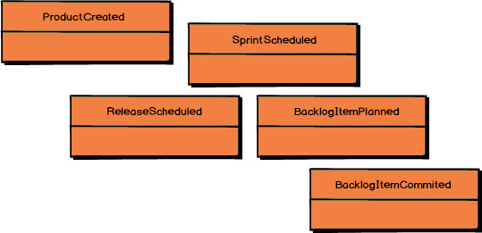
Your Domain Event
type names should be a statement of a past occurrence, that is, a verb in the past tense. Here are some examples from the Agile Project Management Context
: ProductCreated
, for instance, states that a Scrum product was created at some past time.
Other Domain Events
are ReleaseScheduled
, SprintScheduled
, BacklogItemPlanned
, and BacklogItemCommitted
. Each of the names clearly and concisely states what happened in your Core Domain.
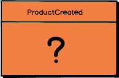
It’s a combination of the Domain Event ’s name and its properties that fully conveys the record of what happened in the domain model. But what properties should a Domain Event hold?
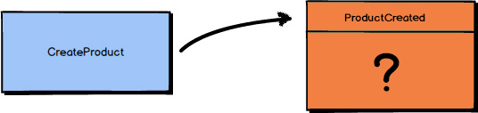
Ask yourself, “What is the application stimulus that causes the Domain Event
to be published?” In the case of ProductCreated
there is a command that causes it (a command is just the object form of a method/action request). The command is named CreateProduct
. So you can say that ProductCreated
is the result of a CreateProduct
command.
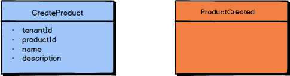
The CreateProduct
command has a number of properties: (1) the tenantId
that identifies the subscribing tenant, (2) the productId
that identifies the unique Product
being created, the (3) Product name
,
and (4) the Product description
. Each of these properties is essential to creating a Product
.
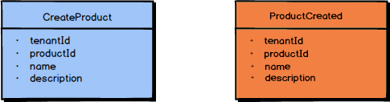
Therefore, the ProductCreated
Domain Event
should hold all the properties that were provided with the command that caused it to be created: (1) tenantId
, (2) productId
, (3) name
, and (4) description
. This will fully and accurately inform all subscribers what happened in the model; that is, a Product
was created, it was for the tenant identified with the tenantId
, the Product
was uniquely identified with productId
, and the Product
had the name
and description
assigned to it.
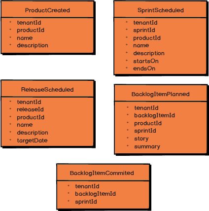
These five examples give you a good idea of the properties that should be included with the various Domain Events
published by the Agile
Project Management Context.
For instance, when a BacklogItem
is committed to a Sprint
, the BacklogItemCommitted
Domain Event
is instantiated and published. This Domain Event
contains the tenantId
, the backlogItemId
of the BacklogItem
that was committed, and the sprintId
of the Sprint
to which it was committed.
As described in Chapter 4
, “Strategic Design with Context Mapping
,” there are times when a Domain Event
can be enriched with additional data. This can be especially helpful to consumers that don’t want to query back on your Bounded Context
to obtain additional data that they need. Even so, you must be careful not to fill up a Domain Event
with so much data that it loses its meaning. For example, consider the problem with BacklogItemCommitted
holding the entire state of the BacklogItem
. According to this Domain Event
, what actually happened? All the extra data may make it unclear, unless you require the consumer to have a deep understanding of your BacklogItem
element. Also, consider using BacklogItemUpdated
with the full state of the BacklogItem
, as opposed to providing BacklogItemCommitted
. What happened to the BacklogItem
is very unclear, because the consumer would have to compare the latest BacklogItemUpdated
to the previous BacklogItemUpdated
in order to understand what actually occurred to the BacklogItem
.
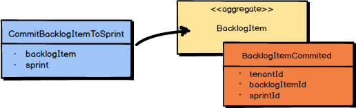
To make the proper use of Domain Events
clearer, let’s walk through one scenario. The product owner commits a BacklogItem
to a Sprint
. The command itself causes the BacklogItem
and the Sprint
to be loaded. Then the command is executed on the BacklogItem
Aggregate.
This causes the state of the BacklogItem
to be modified, and then the BacklogItemCommitted
Domain Event
is published as an outcome.
It’s important that the modified Aggregate and the Domain Event be saved together in the same transaction. If you are using an object-relational mapping tool, you would save the Aggregate to one table and the Domain Event to an event store table, and then commit the transaction. If you are using Event Sourcing , the state of the Aggregate is fully represented by the Domain Events themselves. I discuss Event Sourcing in the next section of this chapter. Either way, persisting the Domain Event in the event store preserves its causal ordering relative to what has happened across the domain model.
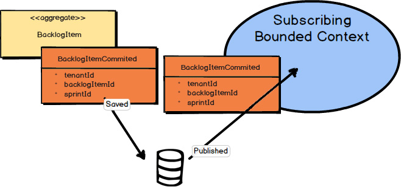
Once your Domain Event is saved to the event store, it can be published to any interested parties. This might be within your own Bounded Context and to external Bounded Contexts. This is your way of telling the world that something noteworthy has occurred in your Core Domain.
Note that just saving the Domain Event in its causal order doesn’t guarantee that it will arrive at other distributed nodes in the same order. Thus, it is also the responsibility of the consuming Bounded Context to recognize proper causality. It might be the Domain Event type itself that can indicate causality, or it may be metadata associated with the Domain Event , such as a sequence or causal identifier. The sequence or causal identifier would indicate what caused this Domain Event , and if the cause was not yet seen, the consumer must wait to apply the newly arrived event until its cause arrives. In some cases it is possible to ignore latent Domain Events that have already been superseded by the actions associated with a later one; in this case causality has a dismissible impact.
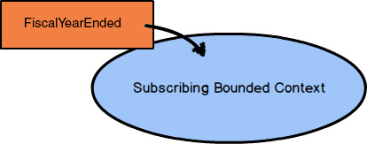
One more point about what can cause a Domain Event is noteworthy. Although often it is a user-based command emitted by the user interface that causes an event to occur, sometimes Domain Events can be caused by a different source. This might be from a timer that expires, such as at the end of the business day or the end of a week, month, or year. In cases like this it won’t be a command that causes the event, because the ending of some time period is a matter of fact. You can’t reject the fact that some time frame has expired, and if the business cares about this fact, the time expiration is modeled as a Domain Event , and not as a command.
What is more, such an expiring time frame will generally have a descriptive name that will become part of the Ubiquitous Language. For example, “Fiscal Year Ended” may be an important event that your business needs to react to. Furthermore, 4:00 p.m. (16:00) on Wall Street is known as “Markets Closed” and not just as 4:00 p.m. Therefore, you have a name for that particular time-based Domain Event.
A command is different from a Domain Event in that a command can be rejected as inappropriate in some cases, such as due to supply and availability of some resources (product, funds, etc.), or another kind of business-level validation. So, a command may be rejected, but a Domain Event is a matter of history and cannot logically be denied. Even so, in response to a time-based Domain Event it could be that the application will need to generate one or more commands in order to ask the application to carry out some set of actions.
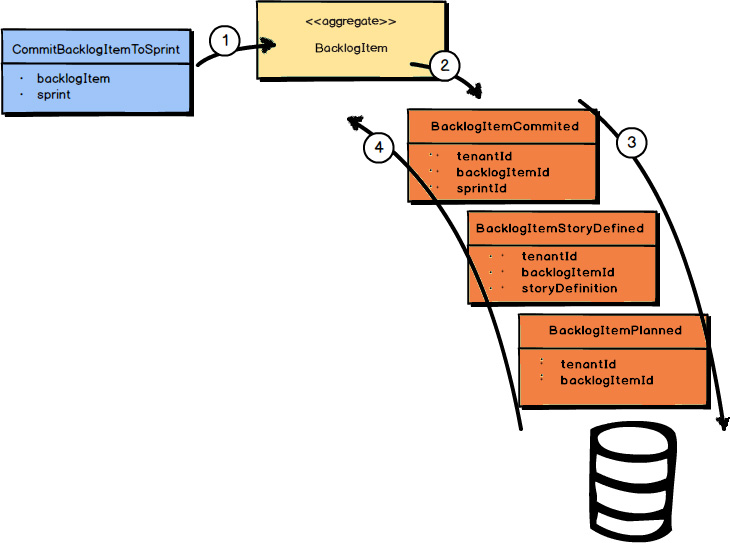
Event Sourcing can be described as persisting all Domain Events that have occurred for an Aggregate instance as a record of what changed about that Aggregate instance. Rather than persisting the Aggregate state as a whole, you store all the individual Domain Events that have happened to it. Let’s step through how this is supported.
All of the Domain Events that have occurred for one Aggregate instance, ordered as they originally occurred, make up its event stream. The event stream begins with the first Domain Event that ever occurred for the Aggregate instance and continues until the last Domain Event that occurred. As new Domain Events occur for a given Aggregate instance, they are appended to the end of its event stream. Reapplying the event stream to the Aggregate allows its state to be reconstituted from persistence back into memory. In other words, when using Event Sourcing , an Aggregate that was removed from memory for any reason is reconstituted entirely from its event stream.
In the preceding diagram, the first Domain Event
to occur was BacklogItemPlanned
; the next was BacklogItemStoryDefined
; and the event that just occurred is BacklogItemCommitted
. The full event stream is currently composed of those three events, and they follow the order described and seen in the diagram.
Each of the Domain Events
that occurs for a given Aggregate
instance is caused by a command, just as described previously. In the preceding diagram, it is the CommitBacklogItemToSprint
command that has just been handled, and this has caused the BacklogItemCommitted
Domain Event
to occur.
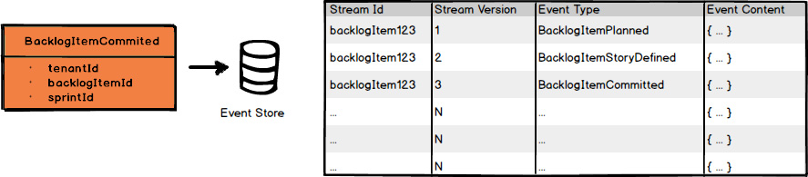
The event store is just a sequential storage collection or table where all Domain Events are appended. Because the event store is append-only, it makes the storage mechanism extremely fast, so you can plan on a Core Domain that uses Event Sourcing to have very high throughput, low latency, and be capable of high scalability.
One of the greatest advantages of using Event Sourcing is that it saves a record of everything that has ever happened in your Core Domain , at the individual occurrence level. This can be very helpful to your business for many reasons, ones that you can imagine today, such as compliance and analytics, and ones that you won’t realize until later. There are also technical advantages. For example, software developers can use event streams to examine usage trends and to debug their source code.
You can find coverage of Event Sourcing techniques in Implementing Domain-Driven Design [IDDD] . Also, when you use Event Sourcing you are almost certainly obligated to use CQRS. You can also find discussions of this topic in Implementing Domain-Driven Design [IDDD] .
In this chapter you learned:
• How to create and name your Domain Events
• The importance of defining and implementing a standard Domain Event interface
• That naming your Domain Events well is especially important
• How to define the properties of your Domain Events
• That some Domain Events may be caused by commands, while others may happen due to the detection of some other changing state, such as a date or time
• How to save your Domain Events to an event store
• How to publish your Domain Events after they are saved
• About Event Sourcing and how your Domain Events can be stored and used to represent the state of your Aggregates
For a thorough treatment of Domain Events and integration, see Chapters 8 and 13 of Implementing Domain-Driven Design [IDDD] .